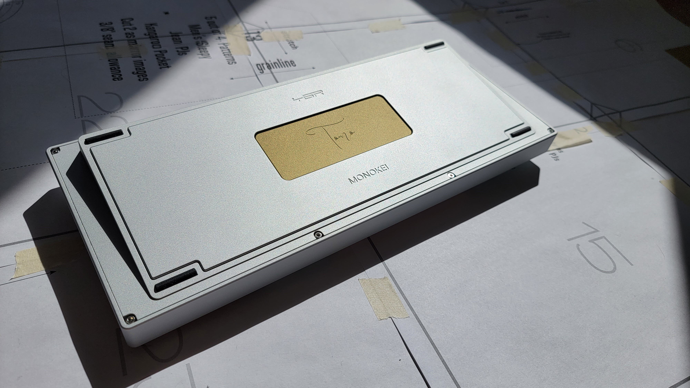
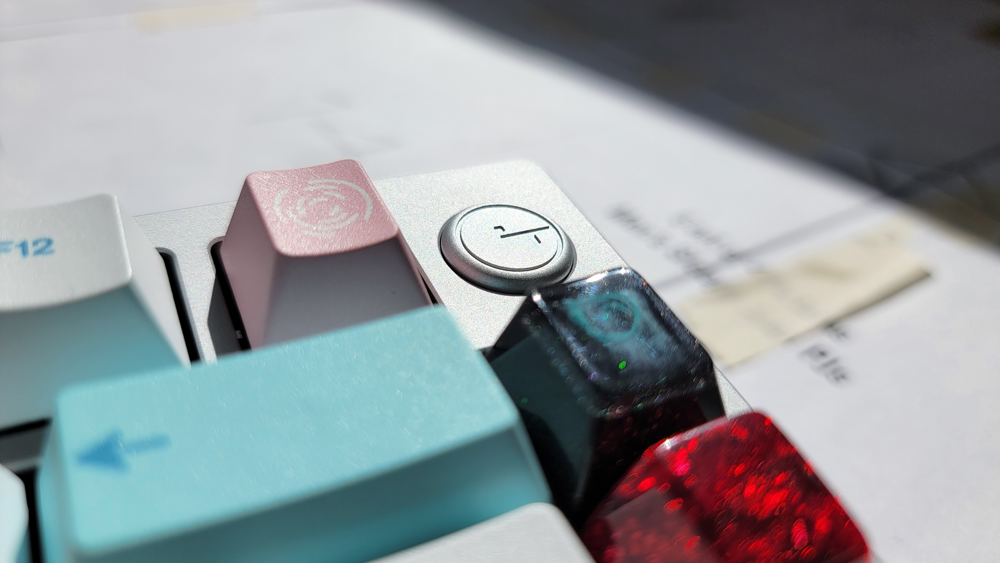
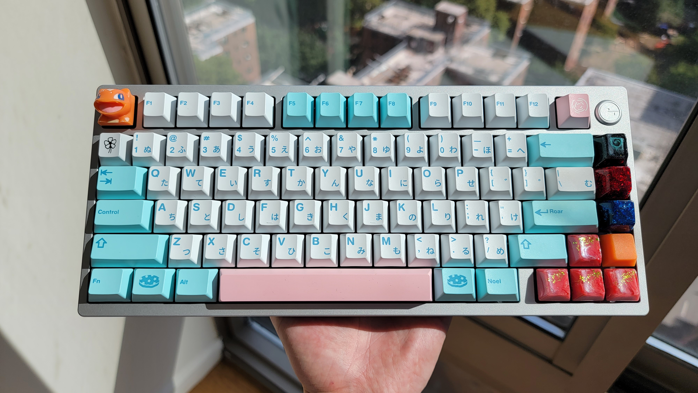
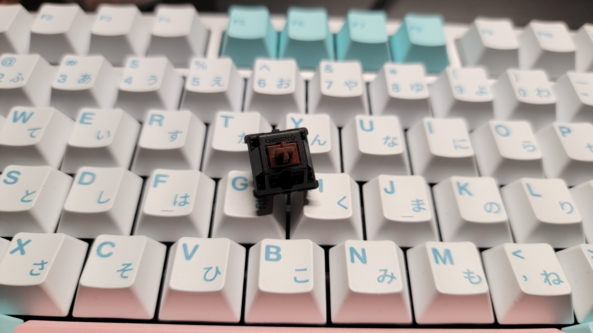

December 1, 2022
Contents
Introduction
My family being originally from Malaysia, I had always wanted to support the Southeast Asian keyboard market, and was pleasantly surprised to see a collaboration between two well-known entities within the mechanical keyboard industry. Monokei, a company based in Singapore/Malaysia, and Yuktsi, the maker of the famous TGR Jane, collaborated together in the MONOKEI x Friends campaign to create the first ever unlimited group-buy TGR keyboard: the Tomo.
I had been using the Owlab Spring for 8 months, and that build is the epitome of what I would consider a “2020s keyboard”: tons of flex, filled with PE and case foam, using new switches like Pewters and Original Aspiration linears, essentially the furthest thing away from “traditional”. The TGR Tomo has put me right back where I started: no PE foam, fancy mounting style, or unique layout; just your traditional top mount aluminum case keyboard.
Interior
The Tomo is a top-mount 75% keyboard with the ability to also be gummy O-ring mounted. This combination of top-mount and gummy O-ring mount capabilities have become much more popular, as the latter has become the standard alternative in keyboards like the TGR Jane. The top-mount would involve the PCB, plate, and switches all being screwed onto the top enclosure for a stiffer typing experience, whereas O-ring mount wraps a large rubber O-ring around the package to emulate a gasket mount. This allows the PCB and plate to be friction fitted for a more bouncy and forgiving feel.
For further detail on the sound and feel of the different mounting styles, I have a section dedicated towards that. But in regards to the case itself, I despise the O-ring mount installation process. This involves putting the O-ring around the PCB and plate, and then slowly wiggling and pushing that whole enclosure into the top portion of the case. With more experience, you may find this easier, but I have always found O-ring mount installation to be irritating and time-consuming. I forced the O-ring into place using a flat-head screwdriver, and this took me around 10-15 minutes. It isn’t a huge time sink, but can be frustrating, especially if you end up putting too much pressure on either the top or the sides, bumping the O-ring out before you can screw the whole case together. Top mount installation is far simpler, only requiring 7 screws to have the PCB and plate installed onto the top part of the case.
The badge in the top right is also secured with two screws on the top part of the case, and is interchangable.
The Tomo comes with case and PCB foam, which helps reduce the hollowness that comes with a lot of top mount keyboards. You can opt to use no foam, however from previous experience, I would recommend leaving at least the case foam in to reduce any hollowness. The PCB foam can also add to the fullness in the sound signature, but can be removed in favor of a higher-pitched clack.
Exterior
Case Design
The Tomo’s back weight design is iconic in its own right. This design is near identical to that of the TGR Jane, featuring the brass badge sunken in the aluminum case. The color contrast between the aluminum and the brass allow the Tomo engraving to stand out, where it is surrounded by the TGR and Monokei engravings. It is absolutely stunning, and is certainly my favorite back weight design out of all the keyboards I’ve built or even seen.
The case itself is held together by eight screws in the back, which more when comparing with most other keyboards (Mode Eighty uses 3, Owlab Spring uses 6). Some people may prefer to see less screws, especially if they are used to screw-less designs or if they want to adjust their builds often. Personally, it isn’t a deal-breaker, but I do miss the cleanliness that non-visible screw designs have.
The front view features a badge in the top right corner of the keyboard. Many people have controversial opinions about this, but it isn’t as obtrusive as some other designs like the Think 6.5 or even the TGR 910. I would have loved to see the F-row spaced out a little bit more to have a brand-less design, but the badge is a nice bit of flair to give the keyboard a little more character. Some people expressed their desire for a knob, but I find knobs unpractical and unseemly, so having the badge instead is fine.
Layout
The Tomo’s layout can be described as “sufficiently compact”. It features an F13 layout, which shifts the function keys slightly to the left in order to make space for the additional key. In addition, I had noticed that the F-row felt slightly closer to the alphanumeric keys than they did with the Mode Eighty. This might seem subtle, but I had found this to be one of my favorite change going from the Eighty to the Tomo. It was much easier to locate the function keys while coding and gaming.
The Tomo also does not have the arrow keys exploded, or separate from the rest of the alphanumeric keys. Thus, the keyboard functions like a 65% but with F-keys. This does feel nice, coming to this from 65% keyboards in comparison to the exploded 75%s (like the Satisfaction 75 or the GMMK Pro, for example). Overall, I love the layout and how it comes together feeling like one solid package, with the F-keys slightly closer yet maintaining enough of a distance to be separate from the alphanumerics, and the rest of the keyboard feeling like home, in a nice 65% layout.
Sound and Feel
Switches
For this build, I decided to use broken-in MX Browns, which I have preferred over the Pewters as of recent. Pewters were designed as linears with a slight “rumble”, which left me desiring just a little more tactility. In addition, as a JWK switch, the sound of the Pewters was lacking the deepness that Cherry housings offer. Initially, I also wanted to stick to a more traditional build for the Tomo, so instead of using another aftermarket switch, I went with Cherry. The slight scratch that Cherry switches have can be irritating at first, but after the break-in period, the scratch becomes a smoothed texture when applied over with Tribosys 3203. Although not as smooth as JWK switches, the slight texture from every press is weirdly comforting. I filmed these switches with Dangkeebs Gasket Switch Films. Filming MX Browns probably isn’t necessary, but I had some lying around so I figured I might as well.
I spring-swapped these with 63.5g Tecsee double-staged springs, which make switches so much more exciting. These double-staged springs have two different weights, they start light, and go heavy after pressing down to a certain point. They give a bounciness that progressive springs dream of, which adds to the overall enjoyment of the typing experience. Some people might not like this, but I found myself adjusting to it within hours and it became my new spring preference, as single-staged springs felt stale in comparison. I would highly recommend anyone to try out a couple if they want to spice up their switches.
Mounting Styles: O-ring mount versus Top mount
For the first three weeks with this build, I used the O-ring mount (which is what the typing test below features). Coming from the flexibility and bounciness that the Spring had offered, the O-ring mount was a nice transition into a slightly stiffer mechanism. In tandem with a PC plate, this Tomo build can’t compare with the leaf spring mount in terms of flex, but it has a slight forgiveness that one might expect out of a normal gasket mount keyboard.
I then switched over to the top mount. Top mount keyboards generally deliver a fuller sound, and the Tomo did not fail there. However, there was a little bit of sharpness, so I tried out the force break mod, which involves putting a little bit of tape next to the screw holes to avoid metal-on-metal contact. This supposedly removes a lot of pinging that you might get in lower-end keyboards, but with the Tomo, I still found that the mod reduced the harsh sounds.
For feel, the top mount has obviously less flex than the O-ring mount, as the PCB and plate are held by screws instead of friction-fit with rubber, but with the PC plate, it remains less firm than any aluminum or brass build (comparing this to the aluminum plate in the Mode Eighty and the brass plate in the M65-B). After typing on the top mount keyboard for hours, I feel no fatigue when I normally would in a brass build.
In terms of sound, the difference between the O-ring mount and the top mount in terms of mounting style is exactly what you hear. In an O-ring mount, there is going to be more space left for sound to travel through the plate and PCB in comparison to a top mount that is screwed down. That space makes the switches sound lighter, akin to a “hollower” sound signature. The top mount completely takes that away, making the keyboard sound fuller.
This second sound test is my current build: top mount with force break mod, and with NK Creams on the mods instead of MX Browns, so the spacebar will sound a little different in comparison to the first, but the difference should be able to be heard in the alphas.
The Tomo is not a ground-breaking keyboard, but it is another successful kit that goes under Yuktsi’s stacked keyboard resume. I believe that TGR keyboards are some of the best when it comes to the traditional top-mount design, and the Tomo is no exception. I hope that keyboards like this continue to find success in a market full of industry-breaking innovations, and am excited to see whatever comes next out of the Southeast Asian keyboard scene.
Thanks for reading,
Justin